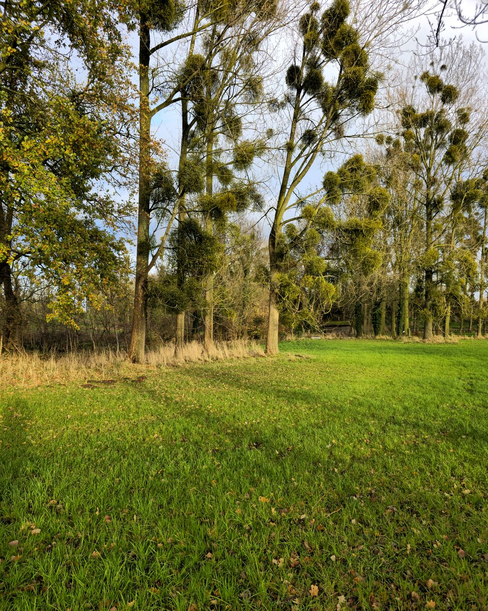
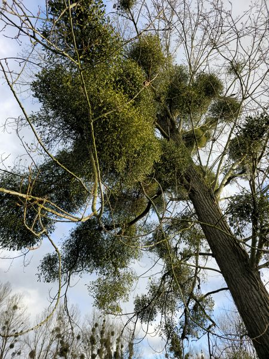
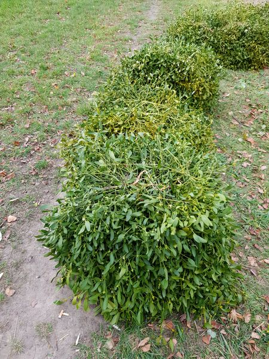
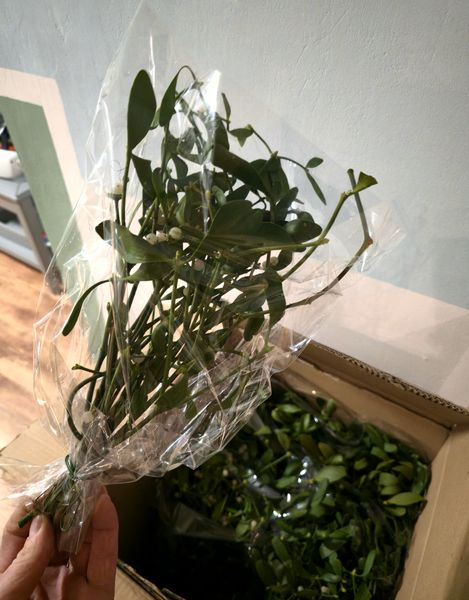

Met liefde voor de natuurWith love for nature
Deco Van Maretak – The Golden Tak – is een kerstmaretak-label uit Roosendaal. Wij leveren verse, zorgvuldig gebonden maretak aan de zakelijke markt.Deco Van Maretak – The Golden Tak – is a Christmas mistletoe label from Roosendaal. We supply fresh, carefully bound mistletoe to the trade.

Een eeuwenoude traditie, klaar voor uw schapA centuries-old tradition, ready for your shelf
Maretak hoort bij Kerstmis: een eeuwenoud symbool van geluk, liefde en een goede gezondheid. Wij brengen die traditie naar de winkelvloer – met verse maretak die er luxe uitziet en klaar is voor verkoop.Mistletoe belongs to Christmas: a centuries-old symbol of luck, love and good health. We bring that tradition to the shop floor – with fresh mistletoe that looks luxurious and is ready for sale.
Wij werken met een vaste partner, gespecialiseerd in natuurlijke decoraties. In Nederland verzorgen wij de verwerking, verpakking, planning en levering aan onze zakelijke klanten.We work with a regular partner specialised in natural decorations. In the Netherlands we handle processing, packaging, planning and delivery to our business customers.
Waar wij voor staanWhat we stand for
- Betrouwbare volumes – van 1.000 tot meer dan 100.000 stuksReliable volumes – from 1,000 to over 100,000 pieces
- Gefaseerde levering volgens uw planningPhased delivery to your schedule
- Verwerkt én onverwerkt leverbaarAvailable processed and unprocessed
- Heldere, hoogwaardige en gezonde kleurenBright, high-quality, healthy dyes
- Persoonlijk contact, korte lijnenPersonal contact, short lines
Zo komt uw maretak tot standHow your mistletoe is made




Zo verpakken en leveren wijHow we pack and deliver
Per pallet, gekoeld en goed verpakt, rechtstreeks naar u.By the pallet, refrigerated and well packed, straight to you.


Ter illustratie: deze foto’s zijn speciaal voor een klant gemaakt; de pallets zijn op diens verzoek zo verpakt. Wij verpakken ook in dozen. Het resultaat hangt af van de specifieke omstandigheden en uw wensen. Aan deze foto’s kunnen geen rechten worden ontleend. Op al onze aanbiedingen en leveringen zijn onze algemene voorwaarden van toepassing.For illustration only: these photos were taken specially for a customer; the pallets were packed this way at their request. We also pack in boxes. The result depends on the specific circumstances and your wishes. No rights can be derived from these photos. Our general terms and conditions apply to all our offers and deliveries.
Algemene voorwaardenGeneral terms and conditions →Klaar voor seizoen 2027?Ready for the 2027 season?
Vraag vrijblijvend een offerte aan. Wij reageren zo snel mogelijk.Request a no-obligation quote. We will get back to you as soon as possible.
+31 6 12 98 07 93 · info@decovanmaretak.nl · Vaartveld 8a73, 4704 SE Roosendaal